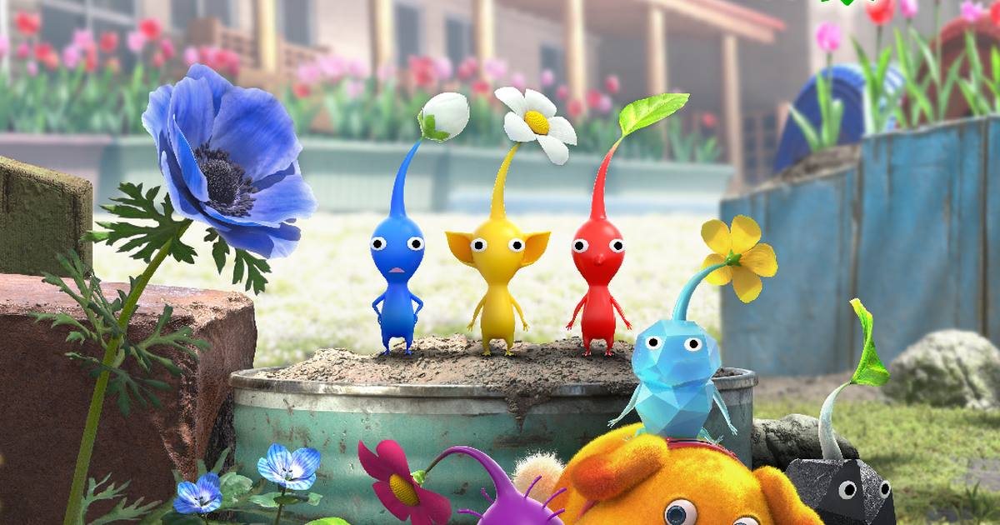

Nintendo Declares November 1 Pikmin Day in a Surprise Direct
Nintendo's surprise nine-minute Pikmin Day Direct on October 31 officially designated November 1 as Pikmin Day, with a free Pikmin 4 Switch 2 demo landing November 2 ahead of the full game's November 12 launch.

Nintendo loves a surprise, and this one arrived with almost no warning. On October 31, a roughly nine-minute Pikmin Day Direct quietly appeared on Nintendo's YouTube channels — not streamed live, announced only shortly beforehand — and it came with a piece of official franchise history: November 1 is now Pikmin Day.
Pikmin creator Shigeru Miyamoto opened the presentation with the reasoning, and it is delightfully on-brand: the original Red, Blue and Yellow Pikmin standing side by side resemble the three 1s in "11/1." Starting this year, November 1 belongs to the little guys.
Everything the Direct announced
No new Pikmin game was announced — Nintendo was clear about that, and the Direct's real job was setting the table for the Switch 2 edition of Pikmin 4. Here's the full rundown:
• Free Pikmin 4 Switch 2 demo — launching November 2, covering the opening Sunspeckled Terrace area and two Dandori Academy stages. Save data carries over to the full game.
• Pikmin 4: Nintendo Switch 2 Edition + Dandori Academy — launches November 12 for $69.99, with a $9.99 Upgrade Pack for owners of the Switch 1 version. The edition adds improved visuals and voice commands for Oatchi.
• Hello! Pikmin short film series — a new animated series from Nintendo Pictures, with the first short debuting in the Direct, a second arriving November 1, and new shorts monthly from December through the Nintendo Today! app.
• Pikmin Bloom Secret Caves — coming winter 2026, letting players obtain cave maps and send Pikmin underground in search of treasure. Finishing Dandori Academy exams in the Switch 2 edition unlocks special cave maps.
• Nintendo Treehouse Plays: Pikmin 4 — streaming November 1 at 9 a.m. PT.
Why a Pikmin Day matters
Nintendo has devoted serious airtime to Pikmin this year — the Switch 2 edition was announced in the September Direct — and a dedicated day is the company planting a flag for one of its most beloved, least blockbuster franchises. Pikmin has never been a Mario-sized seller, but it has one of the most devoted fanbases in gaming, and a yearly date on the calendar is how cult favorites become traditions.
The demo-first strategy is smart, too. A free taste on November 2, ten days before launch, with progress carrying over, is the lowest-friction way to turn curious Switch 2 owners into day-one buyers. If you have ever wondered what the Pikmin fuss is about, Sunday's Treehouse stream and Monday's demo are the on-ramp.
Happy Pikmin Day. The Red, Blue and Yellow ones are waiting.
Sources: GameRant, GameReactor
Gear up: Razer — mice, keyboards, headsets and laptops.